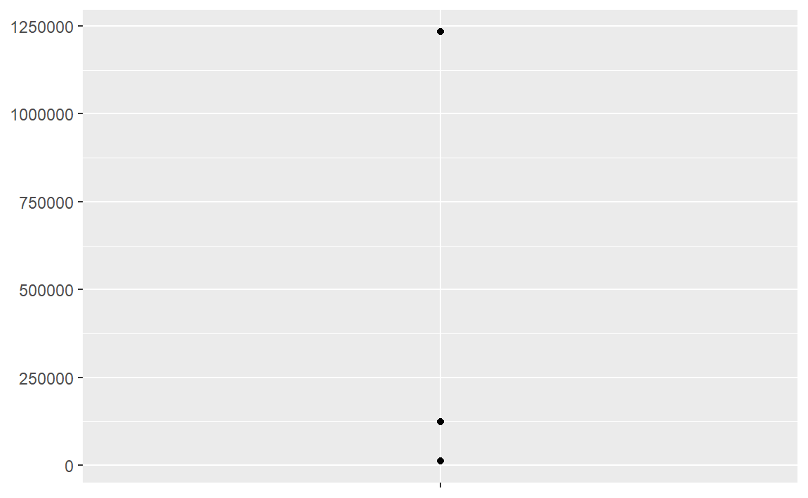
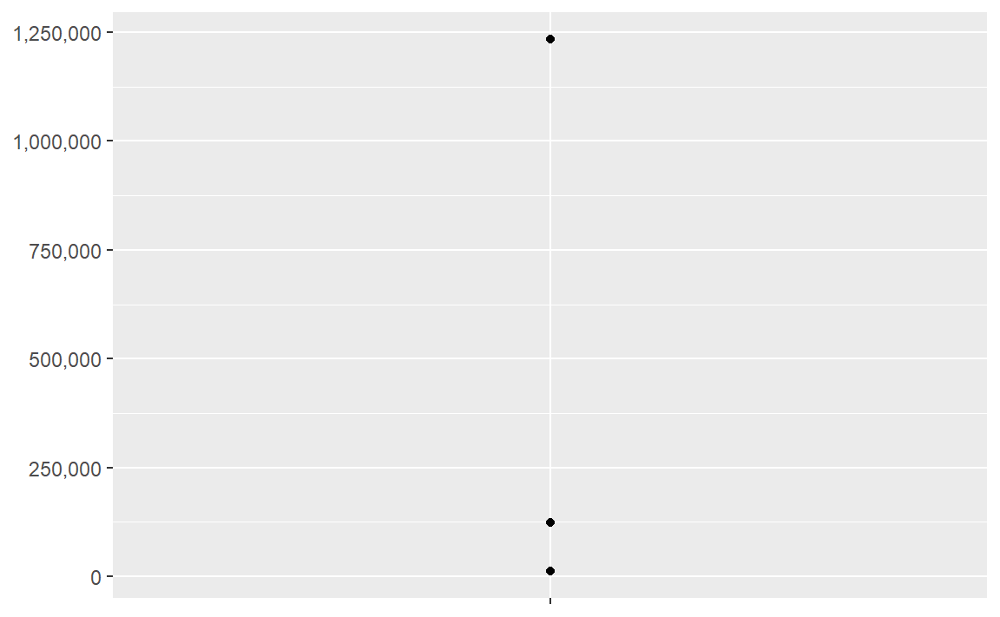
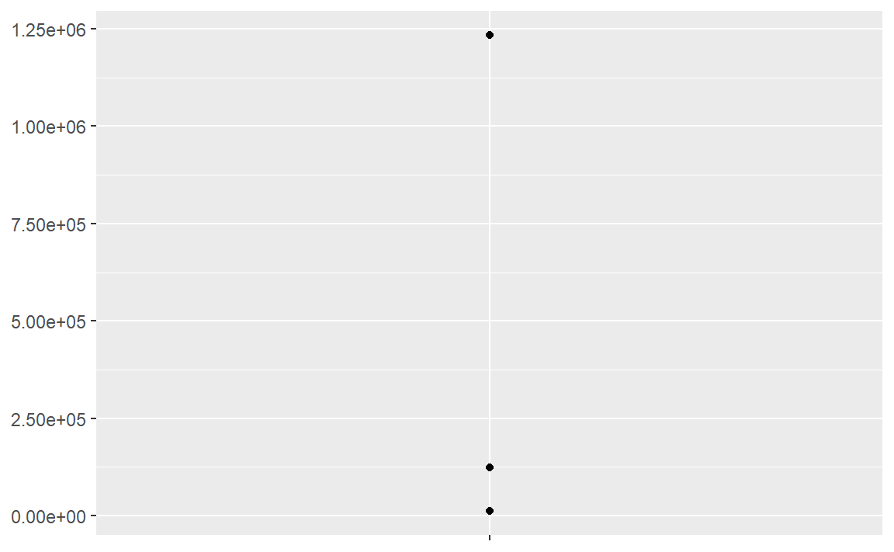
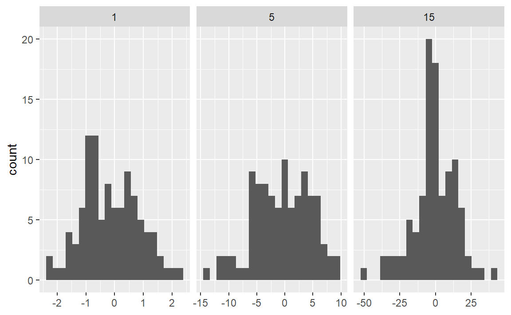
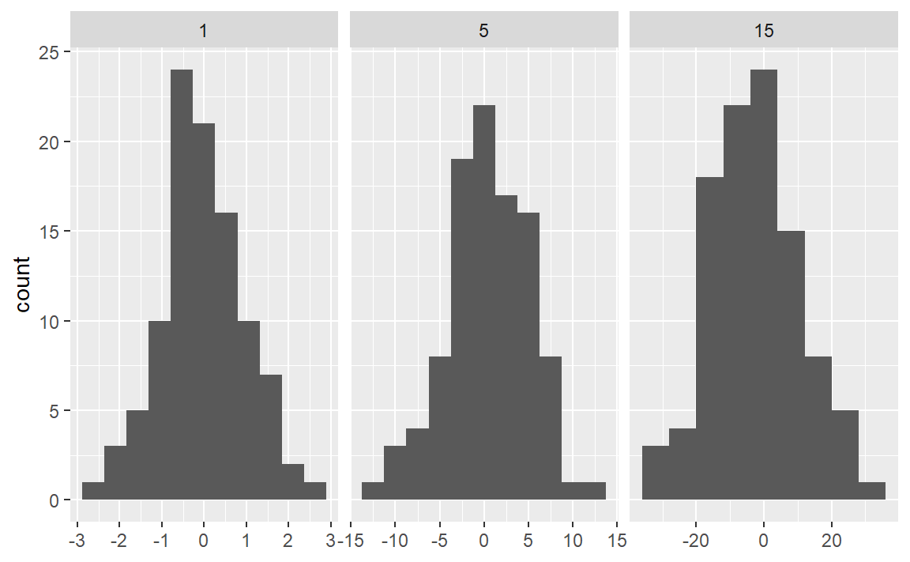
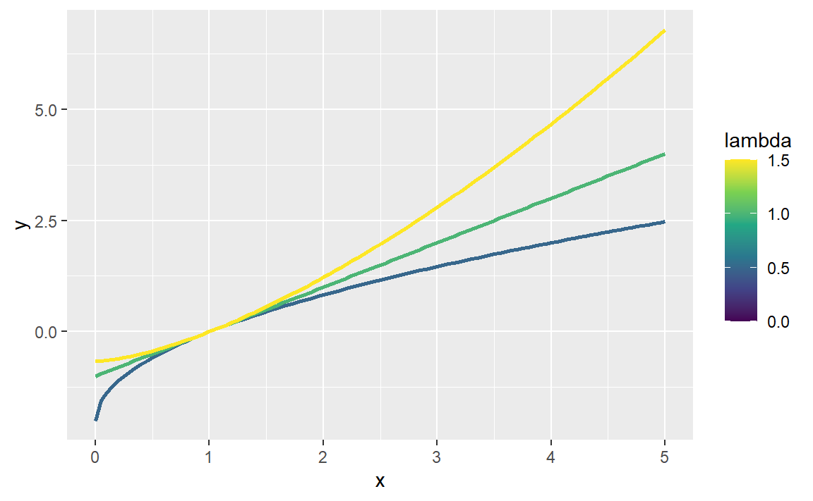
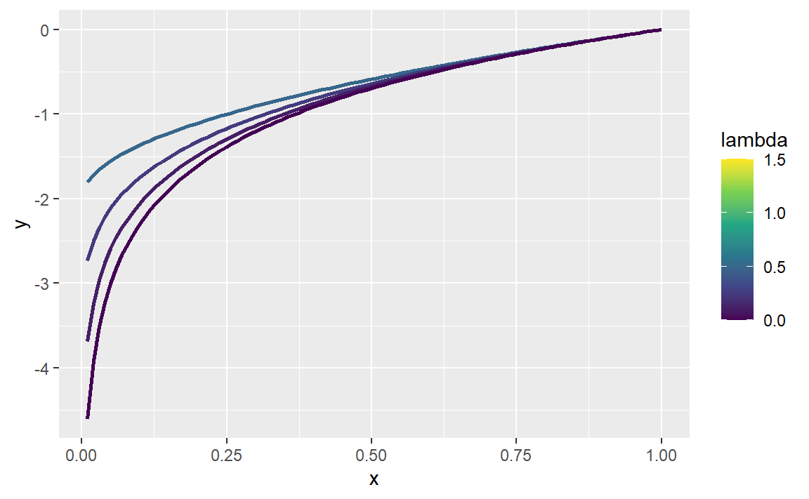

power1 <- function(exp) {
function(x) {
x^exp
}
}
square <- power1(2)
cube <- power1(3)10 Function factories
Introduction
function factories就是能创建函数的函数。下面是一个示例：使用power1()函数生成square()和cube()函数。
square()和cube()函数被称为manufactured functions，与function factories相对，这种叫称呼的唯一意义就是区分函数的来源，本质都是函数，没有区别。
square(3)
#> [1] 9
cube(3)
#> [1] 27我们在之前章节中分别介绍了能够实现function factories的三大基石：
6.2.3节，介绍了R中的函数都是第一类函数（first-class functions），使用
<-直接将function()创建的函数赋值给变量。7.4.2节，介绍了在创建函数时会绑定创建时的环境，形成闭包。
7.4.4节，介绍了函数每次运行时都会创建临时运行环境——最终变成manufunction factories的闭包环境。
本章，我们介绍如何使用上述的三个概念，创建function factories，并将其应用到可视化与统计处理中。
在三种主要的泛函编程工具(functionals, function factories, and function operators)中，function factories是使用最少的。总的来说，它们并不倾向于降低整体代码复杂度，而是将复杂度分割成更容易理解的块。函数工厂也是非常有用的函数运算符的重要组成部分，你将在第 11 章中学习。
Outline
- 10.2节：function factories如何工作和使用
- 10.3节：在可视化中的应用
- 10.4节：在统计分析中的应用
- 10.5节：与泛函联用
Prerequisites
熟悉6.2.3，7.4.2，7.4.4章节中的内容。
我们使用rlang包检视function factories；使用ggplot2，scale包创建可视化示例。
library(rlang)
library(ggplot2)
library(scales)Factory fundamental
实现function factories的关键原理可以表述为：function factories的执行环境是manufactured functions的创建（闭包）环境。本节将通过互动探索和一些图表帮助你更深刻地理解这一原理。
Environments
首先查看一下square()和cube()函数。
square
#> function (x)
#> {
#> x^exp
#> }
#> <environment: 0x000001acbf98c880>
cube
#> function (x)
#> {
#> x^exp
#> }
#> <bytecode: 0x000001acc0c0a458>
#> <environment: 0x000001acc1367208>从两个函数的结构中，我们可以清晰地知道参数x的值来源，但参数exp的值来源呢？仔细观察会发现，两个函数的主体结构是相同的，它们绑定的创建环境不同。
下面我们使用rlang::env_print()函数查看各自的创建环境。
env_print(square)
#> <environment: 0x000001acbf98c880>
#> Parent: <environment: global>
#> Bindings:
#> • exp: <dbl>
env_print(cube)
#> <environment: 0x000001acc1367208>
#> Parent: <environment: global>
#> Bindings:
#> • exp: <dbl>从结果中，我们可以看到两个函数的创建函数的父环境都是全局环境，同时都绑定了变量exp。
我们使用rlang::fn_env()函数查看环境中变量的值。
fn_env(square)$exp
#> [1] 2
fn_env(cube)$exp
#> [1] 3终于，我们找到了square和cube函数的不同之处：square函数的创建环境绑定的变量exp的值为2，而cube函数的创建环境绑定的变量exp的值为3。
Diagram conventions
power1()，square()，cube()三个函数的关系可以用下面示意图表示：

不考虑过多细节，我们可以抽象出下面两条规律：
任何自由浮动的变量都存在于全局变量（function factories的创建环境）中。
任何没有显式父级的环境都继承自全局环境（function factories的创建环境）。

当执行square(10)时，我们可以预料到：x^exp中的x在函数的执行环境中，exp在函数的创建环境中。

Forcing evaluation
在实际使用过程中，power1()函数会因为惰性评估造成bug。
x <- 2
square <- power1(x)
x <- 3此时运行square(2)，不会返回4，而是8。
square(2)
#> [1] 8因为power1()中的x只有在square()被调用时才会被评估。这种由于惰性评估造成的bug，在由function factories生成manufactured functions时广泛存在。
我们可以使用force()函数来强制在创建square()时，power1()的参数x就被评估。
power2 <- function(exp) {
force(exp)
function(x) {
x^exp
}
}
x <- 2
square <- power2(x)
x <- 3
square(2)
#> [1] 4如果输入的参数被调用，那么它就可以被视作“force”了。例如exp <- exp + 1 - 1。
power3 <- function(exp) {
exp <- exp + 1 - 1
function(x) {
x^exp
}
}
x <- 2
square <- power3(x)
x <- 3
square(2)
#> [1] 4Stateful functions
6.4.3节中讲到，函数每次执行都会创建执行环境，我们无法将函数的第一次调用与第二次调用进行关联。但是function factories可以允许我们进行关联，保持每次调用时的状态。
manufactured functions的执行环境是function factories的创建环境——唯一且固定。
R 中的
<<-允许修改创建环境中的变量。
下面是一个记录函数被调用次数的状态函数例子：
new_counter <- function() {
i <- 0
function() {
i <<- i + 1
i
}
}
counter_one <- new_counter()
counter_two <- new_counter()counter_one()和counter_two()创建时，i的初始值是0。

每被调用一次，i的值都会加1。
counter_one()
#> [1] 1
counter_one()
#> [1] 2
counter_two()
#> [1] 1
状态函数最好用于调节。一旦函数开始管理多个变量的状态，最好切换到 R6 面向对象, 我们会在第14章中介绍。
Garbage collection
因为manufactured functions的执行环境是唯一且固定的，我们无法在全局环境中删除其创建的变量，当它内部创建了内存消耗过大的变量时，我们要手动定义删除这些变量。
f1 <- function(n) {
x <- runif(n)
m <- mean(x)
function() m
}
g1 <- f1(1e6)
lobstr::obj_size(g1)
#> 8.00 MB
f2 <- function(n) {
x <- runif(n)
m <- mean(x)
rm(x)
function() m
}
g2 <- f2(1e6)
lobstr::obj_size(g2)
#> 504 BGraphical factories
本节我们给出一些应用function factories到ggplot2的例子。
Labelling
scales 包提供了许多function factories，例如其中的formatter函数：它根据参数返回一个函数，用来生成不同格式的标签。
y <- c(12345, 123456, 1234567)
comma_format()(y)
#> [1] "12,345" "123,456" "1,234,567"
number_format(scale = 1e-3, suffix = " K")(y)
#> [1] "12 K" "123 K" "1 235 K"scales 包的这些function factories，可以说就是为了ggplot2服务的，例如laebls参数需要提供的值就是一个函数，用来对轴标签进行格式化。
df <- data.frame(x = 1, y = y)
core <- ggplot(df, aes(x, y)) +
geom_point() +
scale_x_continuous(breaks = 1, labels = NULL) +
labs(x = NULL, y = NULL)
core
core + scale_y_continuous(
labels = comma_format()
)
core + scale_y_continuous(
labels = number_format(scale = 1e-3, suffix = " K")
)
core + scale_y_continuous(
labels = scientific_format()
)
Histogram bins
geom_histogram()的binwidth参数除接受一个数值外，也可以接受一个函数。函数在分组绘制histogram时十分有用，因为它会按组别计算bin宽度，保持bin的数目一致。下面是一个例子：
# construct some sample data with very different numbers in each cell
sd <- c(1, 5, 15)
n <- 100
df <- data.frame(x = rnorm(3 * n, sd = sd), sd = rep(sd, n))
ggplot(df, aes(x)) +
geom_histogram(binwidth = 2) +
facet_wrap(~sd, scales = "free_x") +
labs(x = NULL)
我们在生成数据时，每个组的数据量是相同的，但区间不同；导致当设置binwidth参数为固定值时，不同组别的bin数目不同的，相反我们应该固定bin的数目，根据bin数据计算binwidth。
binwidth_bins <- function(n) {
force(n)
function(x) {
(max(x) - min(x)) / n
}
}
ggplot(df, aes(x)) +
geom_histogram(binwidth = binwidth_bins(20)) +
facet_wrap(~sd, scales = "free_x") +
labs(x = NULL)
base R 提供了一些计算最优binwidth的函数，例如nclass.Sturges(),nclass.scott(),nclass.FD()，我们可以将其打包成一个function factories。
base_bins <- function(type) {
fun <- switch(type,
Sturges = nclass.Sturges,
scott = nclass.scott,
FD = nclass.FD,
stop("Unknown type", call. = FALSE)
)
function(x) {
(max(x) - min(x)) / fun(x)
}
}
ggplot(df, aes(x)) +
geom_histogram(binwidth = base_bins("FD")) +
facet_wrap(~sd, scales = "free_x") +
labs(x = NULL)
ggsave()
gglot2 中的ggsave()函数，其内部使用了一个function factories——plot_dev()。 其根据文件后缀判断图片类型，选择合适的绘图设备。下面是plot_dev()的简化示例：
plot_dev <- function(ext, dpi = 96) {
force(dpi)
switch(ext,
eps = ,
ps = function(path, ...) {
grDevices::postscript(
file = filename, ..., onefile = FALSE,
horizontal = FALSE, paper = "special"
)
},
pdf = function(filename, ...) grDevices::pdf(file = filename, ...),
svg = function(filename, ...) svglite::svglite(file = filename, ...),
emf = ,
wmf = function(...) grDevices::win.metafile(...),
png = function(...) grDevices::png(..., res = dpi, units = "in"),
jpg = ,
jpeg = function(...) grDevices::jpeg(..., res = dpi, units = "in"),
bmp = function(...) grDevices::bmp(..., res = dpi, units = "in"),
tiff = function(...) grDevices::tiff(..., res = dpi, units = "in"),
stop("Unknown graphics extension: ", ext, call. = FALSE)
)
}
plot_dev("pdf")
#> function (filename, ...)
#> grDevices::pdf(file = filename, ...)
#> <bytecode: 0x000001acc69877b0>
#> <environment: 0x000001acc7194650>
plot_dev("png")
#> function (...)
#> grDevices::png(..., res = dpi, units = "in")
#> <bytecode: 0x000001acc61ad698>
#> <environment: 0x000001acc4e1cc70>Statistical factories
本节介绍一些统计分析中运用到的function factories例子。
Box-Cox transformation
Box-Cox变换是一种常用的数据变换方法，用于处理非正态数据正态化。唯一参数是λ，用来控制转换强度。Box-Cox变换可以用下面的函数实现：
boxcox1 <- function(x, lambda) {
stopifnot(length(lambda) == 1)
if (lambda == 0) {
log(x)
} else {
(x^lambda - 1) / lambda
}
}我们将上面的函数转换为一个function factories，用其探索不同λ对数据的影响。
boxcox2 <- function(lambda) {
if (lambda == 0) {
function(x) log(x)
} else {
function(x) (x^lambda - 1) / lambda
}
}
stat_boxcox <- function(lambda) {
stat_function(aes(color = lambda), fun = boxcox2(lambda), linewidth = 1)
}
ggplot(data.frame(x = c(0, 5)), aes(x)) +
lapply(c(0.5, 1, 1.5), stat_boxcox) +
scale_colour_viridis_c(limits = c(0, 1.5))
ggplot(data.frame(x = c(0.01, 1)), aes(x)) +
lapply(c(0.5, 0.25, 0.1, 0), stat_boxcox) +
scale_colour_viridis_c(limits = c(0, 1.5))

Bootstrap generators
在统计分析工作中，我们经常需要多个Bootstrap生成器，这个时候构建一个Bootsrap生成器的function factories就显得很有必要。
下面是一个对数据框中某列进行随机抽样的例子：
boot_sample <- function(df, var) {
n <- nrow(df)
force(var)
function() {
col <- df[[var]]
col[sample(n, replace = TRUE)]
}
}
boot_mtcars1 <- boot_sample(mtcars, "mpg")
head(boot_mtcars1())
#> [1] 15.0 18.7 15.8 17.8 21.4 15.8
head(boot_mtcars1())
#> [1] 19.7 21.4 13.3 13.3 21.5 30.4有时我们需要构建一个根据模型生成随机样本的Bootstrap生成器。
boot_model <- function(df, formula) {
model <- lm(formula, data = df)
fitted <- unname(fitted(model))
resid <- unname(resid(model))
rm(model)
function() {
fitted + sample(resid)
}
}
boot_mtcars2 <- boot_model(mtcars, mpg ~ wt + disp)
head(boot_mtcars2())
#> [1] 22.06680 27.93947 23.24319 22.34347 23.40125 16.51648
head(boot_mtcars2())
#> [1] 25.11314 20.01861 23.17180 17.40872 14.46308 19.10514Maximum likelihood estimation
最大似然估计（MLE）用来找到某个分布的参数，使得观测数据在该分布下出现概率最大。下面我们使用泊松分布来演示如何通过function factories优雅的实现最大似然估计。
泊松分布的公式如下，当已知参数λ后，我们可以计算观察数据\(X\)的概率：
\[ P(\lambda,{\bf x})=\prod_{i=1}^{n}\frac{\lambda^{x_{i}}e^{-\lambda}}{x_{i}!} \]
在统计中，我们通常对数化累乘公式，将其转换为累加：
- 累加的计算量小
- 累乘在计算机中会导致浮点数精确度下降
\[ \log(P(\lambda,{\bf x})) = \sum_{i=1}^{n}\log\left(\frac{\lambda^{x_i}e^{-\lambda}}{x_i!}\right) \]
\[ \log(P(\lambda,{\bf x})) = \sum_{i=1}^{n}\left(x_i\log(\lambda) - \lambda - \log(x_i!)\right) \]
\[ \log(P(\lambda,{\bf x})) = \sum_{i=1}^{n}x_i\log(\lambda) - \sum_{i=1}^{n}\lambda - \sum_{i=1}^{n}\log(x_i!) \]
\[ \log(P(\lambda,{\bf x})) = \log(\lambda)\sum_{i=1}^{n}x_i - n\lambda - \sum_{i=1}^{n}\log(x_i!) \]
构造已知λ后计算观察数据\(X\)概率的函数：
mle_poisson <- function(lambda, x) {
# x 相对是固定的，提前计算，可以节省计算资源
sum_x <- sum(x)
n <- length(x)
c <- sum(lfactorial(x))
# log(lambda) * sum(x) - n * lambda - sum(lfactorial(x))
log(lambda) * sum_x - n * lambda - c
}使用base R 计算观察数据\(X\)的概率：
x1 <- c(41, 30, 31, 38, 29, 24, 30, 29, 31, 38)
mle_poisson(10, x1)
#> [1] -183.6405
mle_poisson(20, x1)
#> [1] -61.14028
mle_poisson(30, x1)
#> [1] -30.98598虽然我们可以计算已知λ下的观察数据\(X\)的概率，但是最大似然估计要求我们找到一个λ，使得该概率最大。我们可以构造一个观察数据\(X\)的function factories，并使用optimize()函数来寻找最大概率的λ。
mle_poisson2 <- function(x) {
force(x)
function(lambda) {
mle_poisson(lambda, x)
}
}
optimise(mle_poisson2(x1), interval = c(0, 100), maximum = TRUE)
#> $maximum
#> [1] 32.09999
#>
#> $objective
#> [1] -30.26755借助optimize()函数的...参数，我们可以直接使用下面的代码：
optimise(mle_poisson, interval = c(0, 100), x = x1, maximum = TRUE)
#> $maximum
#> [1] 32.09999
#>
#> $objective
#> [1] -30.26755Function factories + functionals
组合使用function factories和functionals，可以通过map系函数传递参数，构造出一个函数集合。如果你的function factories需要多个参数，就使用相应的map系函数。
names <- list(
square = 2,
cube = 3,
root = 1 / 2,
cuberoot = 1 / 3,
reciprocal = -1
)
funs <- purrr::map(names, power1)
funs$root(64)
#> [1] 8
funs$root
#> function (x)
#> {
#> x^exp
#> }
#> <bytecode: 0x000001acc0c0a458>
#> <environment: 0x000001acc191bd60>在上面的例子中，你需要使用funs$来提取函数，下面有三种方法可以直接使用funs内部的函数：
- 使用
with()，临时提取函数
with(funs, root(64))
#> [1] 8- 使用
attach()，将函数绑定到当前环境
attach(funs)
#> The following objects are masked _by_ .GlobalEnv:
#>
#> cube, square
root(100)
#> [1] 10
detach(funs)- 使用
rlang::env_bind()，将函数绑定到当前环境
rlang::env_bind(globalenv(), !!!funs)
root(100)
#> [1] 10
rlang::env_unbind(globalenv(), names(funs))